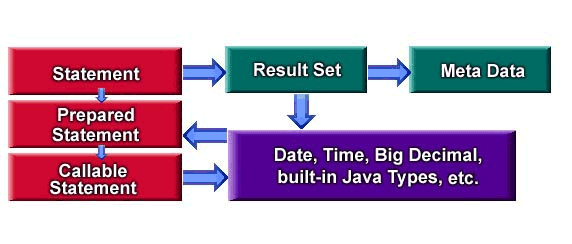

| Reference | Help | Introduction | Slide Show | Class Hierarchy | InterClient | ||
| PREV | NEXT | FRAMES | NO FRAMES | ||

Since jdbc supports dynamic query execution, result set meta data can be extracted to describe the columns of a result set.
Notice that meta data must be extracted from an actual result set in jdbc 1. In jdbc 2, and interclient 1.50, result set meta data can be extracted from a prepared statement before statement execution.
See examples/FirstExample.java
| Reference | Help | Introduction | Slide Show | Class Hierarchy | InterClient | ||
| PREV | NEXT | FRAMES | NO FRAMES | ||